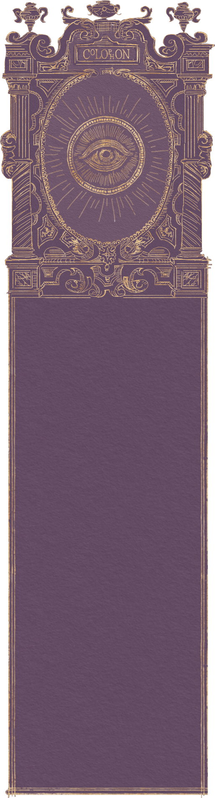

This site was inspired by Samuel Day's “Quest of Evolution”, which encouraged me to build something expressive and whimsical.
All of the code here is handcrafted with regular HTML, CSS, and JavaScript. For the smooth scrolling effect, I use smooth-scrollbar to give the page some gentle and soft movement.
The typography you see here is my own handwriting, converted into a usable font with Calligraphr. All illustrations and embellishments were drawn using a Wacom Intuos Pro tablet in Photoshop. I also use PP Editorial by Pangram Pangram Foundry.
Animations were created in Adobe After Effects and exported as vector animations with Lottie making them lightweight for the web while preserving their hand-drawn character.